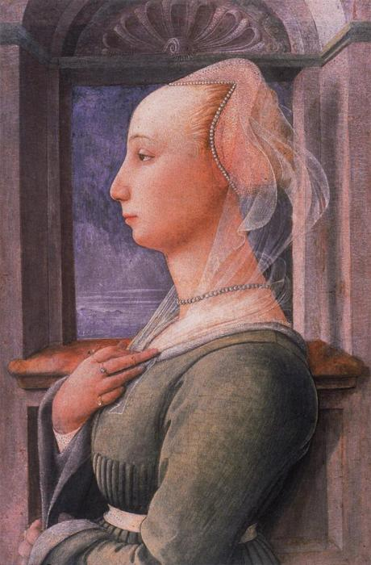
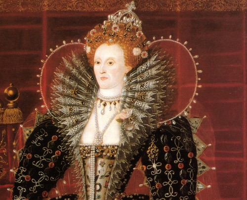
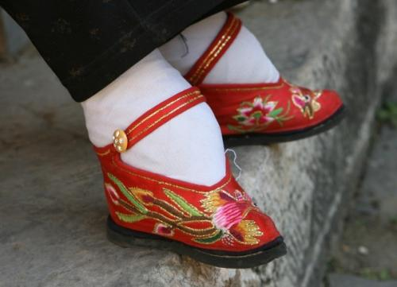
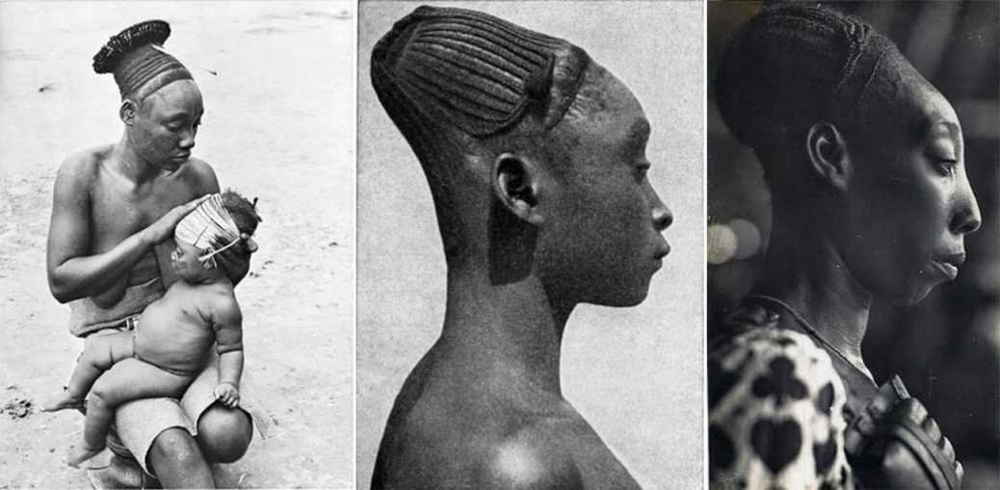

In an era of completely mistaken aesthetics, as far as the appearance is concerned - fluctuating
between the two extremes - naturally against artificially, at a time when you can correct yourself,
have more fleshy lips, express cheekbones, perfect nose chip and even more hair, the standards of
what's beautiful are totally fuzzy. Looking back to the past, it turns out that the standards of
beauty and sophistication are a dynamically changing figure that has not only acquired grotesque
dimensions today. And while makeup is an experiment on our face that we can easily erase and try
again and again, there have been beauty standards in the past that are more horrible and weird and
some of them - irreparably painful.

A big forehead for Renaissance Beauty
Women see long necks as a true sign of Beauty

Porcelain Skin was the thing to be Envied

In China they liked small legs

Ancient Mayas did not like the natural shape of their skulls
The lashes were not in fashion during the Renaissance